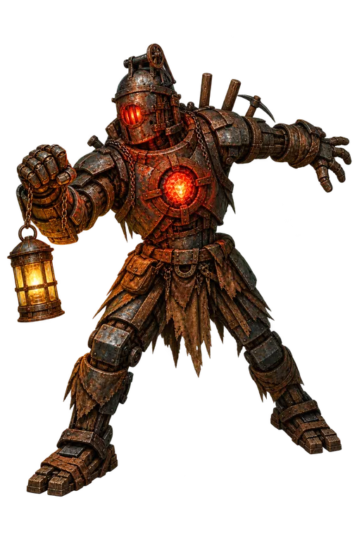
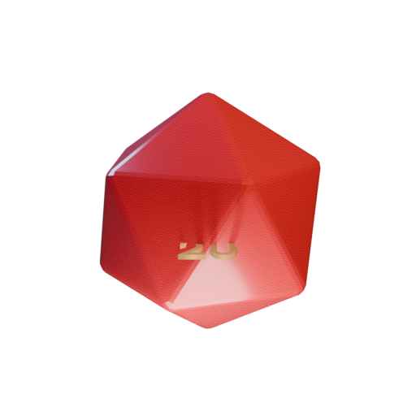

扉の先から、重い金属音がする。

言葉に迷ったときの下書きです。崩しても、冗談を足しても、全部言い換えても大丈夫。
生成しても、仲間への発言や行動にはなりません。
現在の進行を消します。実行前に確認します。
今の進行を消して、最初から始めますか？
この卓で交わした会話とGMの記録です。未共有の個別情報は含みません。
ClaudeはAnthropicへ、GemmaはGoogleへ会話と判断用の情報を送信します。進行を保ったまま切り替えられ、選択は再読み込みで既定に戻ります。
UIと連携の試作です。あなたはイネスを操作します。仲間の名前を押すと能力を確認できます。AIは発言と行動を選び、結果はゲームのルールで確定します。進行はこの画面内だけで共有され、再読み込みすると戻ります。
サウンド・音量・TTS（読み上げ）・STT（音声入力）
表示だけを切り替えます。戦闘の操作と会話はできません。
消失点は舞台側の投影です。背景画に描かれた遠近は画像自体に含まれます。
戦闘画面だけの調整です。進行や判定には影響しません。
発言した人物を7秒間照らします。消灯中は止まり、手がかりの発見条件は変わりません。
変更はこのプレイ中だけ有効です。
